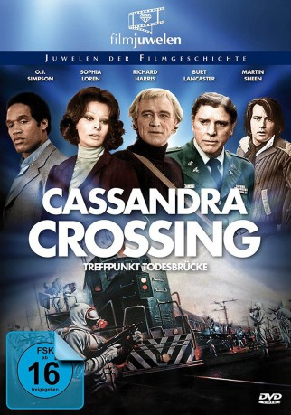

#5773 Cassandra Crossing
 
 IMDB-Wertung: 6.3 / 10
IMDB-Wertung: 6.3 / 10  Metascore: 0
Metascore: 0 
Während eines Anschlags in Genf wird ein Lungenpest-Erreger freigesetzt. Ein Täter entkommt, flieht in den Express-Zug nach Stockholm und wird entdeckt. Der Zug wird mit Wachen besetzt, hermetisch abgeriegelt. Colonel Mackenzie will ihn aufs Gelände eines ehemaligen KZs umleiten. Der Zug rast auf die einsturzgefährdete Cassandra-Brücke zu. Arzt Dr. Chamberlain und seine Frau Jennifer erzielen erste Erfolge bei der Heilung der infizierten Passagiere. Colonel Mackenzie besteht auf der Durchführung des Plans. Ein Wettlauf mit der Zeit beginnt...
Jahr: 1976
Dauer: 128 Minuten
FSK: 16
Land: West-Deutschland Studio: Cinerama Filmgesellschaft MBHTonspuren:
Untertitel: Deutsch, Englisch,
Auflösung: 1080p (1920x1080) Größe: 10076 MB
Genre: Thriller, Drama
Regisseur: George P. Cosmatos
Drehbuch: Jules Verne
Soundtrack:
Darsteller:
 Sophia Loren als Jennifer Rispoli Chamberlain
Sophia Loren als Jennifer Rispoli Chamberlain Richard Harris als Dr. Jonathan Chamberlain
Richard Harris als Dr. Jonathan Chamberlain Martin Sheen als Robby Navarro
Martin Sheen als Robby Navarro O.J. Simpson als Haley
O.J. Simpson als Haley Lionel Stander als Max, the Train Conductor
Lionel Stander als Max, the Train Conductor- Ann Turkel als Susan
 Ingrid Thulin als Dr. Elena Stradner
Ingrid Thulin als Dr. Elena Stradner- Lee Strasberg als Herman Kaplan
 Ava Gardner als Nicole Dressler
Ava Gardner als Nicole Dressler Burt Lancaster als Colonel Stephen Mackenzie
Burt Lancaster als Colonel Stephen Mackenzie Lou Castel als Swedish Terrorist
Lou Castel als Swedish Terrorist- John Phillip Law als Major Stack
 Alida Valli als Nanny
Alida Valli als Nanny- Thomas Hunter als Captain Scott
- Ray Lovelock als Tom
- Stefano Patrizi als Terrorist
- Fausta Avelli als Caterina
- Angela Goodwin als Nun
- Carlo De Mejo als Faux Patient , uncredited
- John P. Dulaney als Harmonica Player , uncredited
- Andrea Esterhazy als Train Passenger , uncredited
- Renzo Palmer als Train Station Ticket Collector , uncredited
- Teresa Rossi Passante als Survivor , uncredited
- Michael Staudt als Marine Guard , uncredited
- Adam Strasberg als Child , uncredited
- David Lee Strasberg als Child , uncredited
- Maurizio Streccioni als Survivor , uncredited
- Thomas Williams als Marine Guard , uncredited
Datei: X:\1976\Cassandra Crossing (1976, FSK16, 1920x1080).mkv seit 20.03.2017
Festplatte: HD 1971-1979
 Es gibt insgesamt 31 Filme in der Gruppe '1976'
Es gibt insgesamt 31 Filme in der Gruppe '1976'